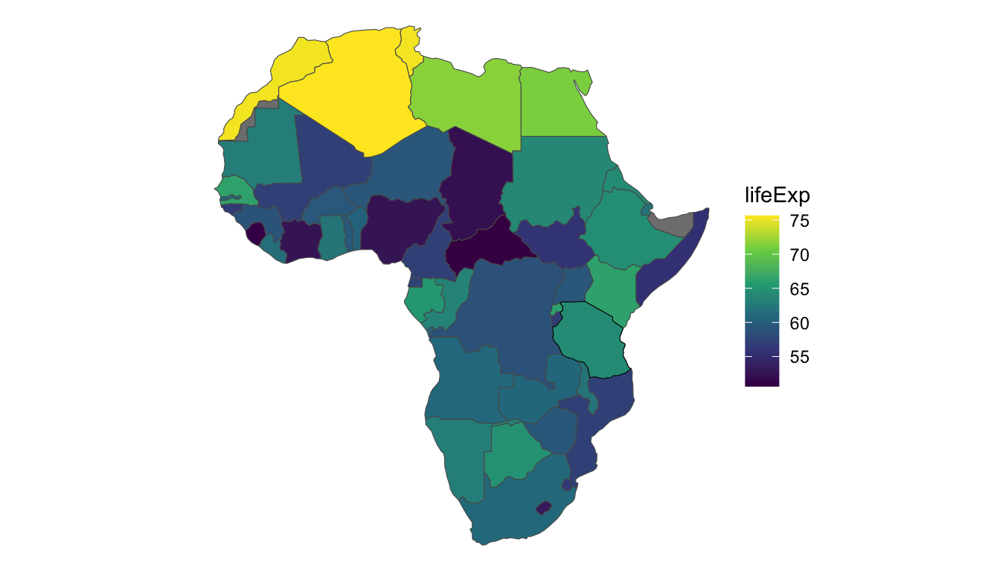
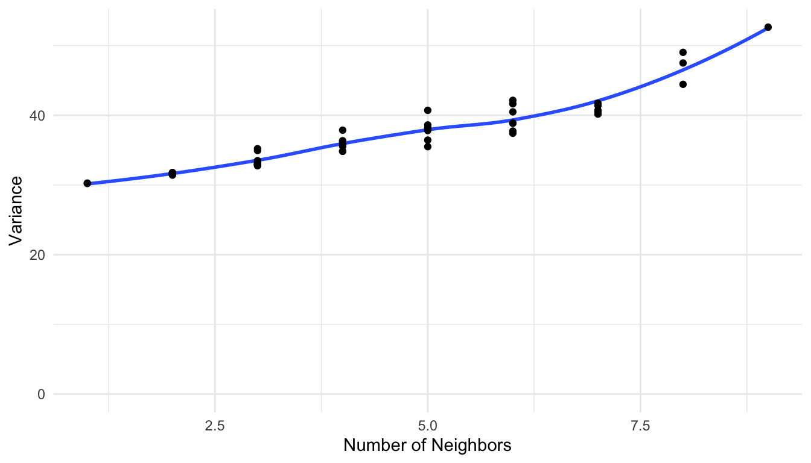
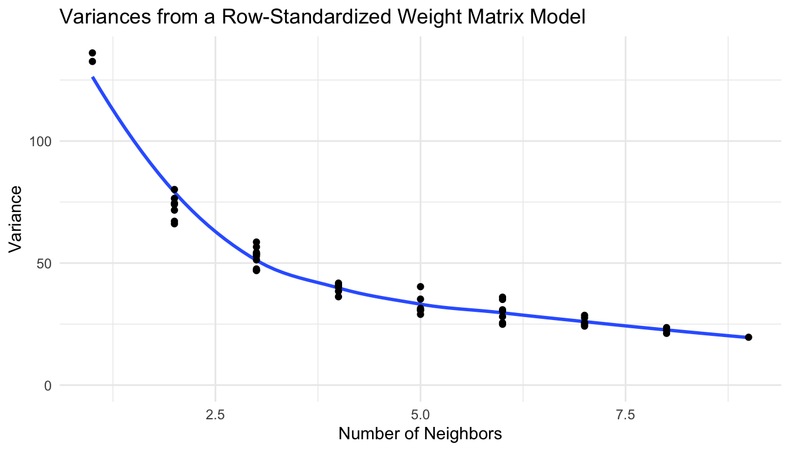

library(spmodel)
library(sf)
library(spData)
library(tidyverse)
theme_set(theme_minimal()) ## set the default theme7 Areal Modeling
Goals
- Explain the difference between spatial point data and spatial polygon data.
- Fit and interpret a spatial autoregressive model to spatial polygon data.
- Predict the value of response variable at an unobserved polygon.
Throughout this section, we will use the spmodel, sf, spData, and tidyverse packages:
7.1 Data Introduction: Countries in Africa
To motivate the use of spatial autoregressive models, consider the African countries in the world data set from the spData package. The world data set has a few variables of interest for each country, but we will focus on lifeExp, the life expectancy at birth in the year 2014. For now, we filter out the island country of "Madagascar", though we will add this country back in at the end of the section. And, the plot below gives a black outline around "Tanzania", a country on the eastern coast of Africa. We will use "Tanzania" as an example country throughout this section.
africa_cont <- world |> filter(continent == "Africa") |>
filter(name_long != "Madagascar")
ggplot(data = africa_cont, aes(fill = lifeExp)) +
geom_sf() +
geom_sf(data = africa_cont |> filter(name_long == "Tanzania"),
colour = "black") +
theme_void() +
scale_fill_viridis_c()
Let’s take note of a few things about this data set. First, the entire structure of the data set is different than all of the other data sets we have seen in previous sections: the data is now areal polygons, not points. Note in the printout of the africa_cont sf object that the Geometry type is now MULTIPOLYGON, indicating that at least some countries in the original world data set are made up of more than one polygon (New Zealand is one such example, as the country is made up of multiple islands, each its own polygon).
africa_cont
## Simple feature collection with 50 features and 10 fields
## Geometry type: MULTIPOLYGON
## Dimension: XY
## Bounding box: xmin: -17.62504 ymin: -34.81917 xmax: 51.13387 ymax: 37.34999
## Geodetic CRS: WGS 84
## # A tibble: 50 × 11
## iso_a2 name_long continent region_un subregion type area_km2 pop lifeExp
## * <chr> <chr> <chr> <chr> <chr> <chr> <dbl> <dbl> <dbl>
## 1 TZ Tanzania Africa Africa Eastern … Sove… 932746. 5.22e7 64.2
## 2 EH Western S… Africa Africa Northern… Inde… 96271. NA NA
## 3 CD Democrati… Africa Africa Middle A… Sove… 2323492. 7.37e7 58.8
## 4 SO Somalia Africa Africa Eastern … Sove… 484333. 1.35e7 55.5
## 5 KE Kenya Africa Africa Eastern … Sove… 590837. 4.60e7 66.2
## 6 SD Sudan Africa Africa Northern… Sove… 1850886. 3.77e7 64.0
## # ℹ 44 more rows
## # ℹ 2 more variables: gdpPercap <dbl>, geom <MULTIPOLYGON [°]>The geom column in africa_cont contains “directions” for how R should draw each polygon by providing a long list of coordinates to connect with lines to form the polygons for each country.
Analyzing spatial data where each observation is collected at a particular point in space is sometimes called geostatistical analysis. We have performed geostatistical analysis for all examples prior to this one. With this data set, life expectancy is collected across an entire area (a country) so we now have areal data.
Sometimes, geostatistical analysis is still performed on areal data, by using the centroid of each polygon as a substitute for “point-level” coordinates. The moose data set used in Chapter 6 is one such example: moose presence is observed on a polygonal area but the data we have only contains the centroid of each polygon. More often, however, the autoregressive models that we discuss next are used for this type of data if we have information on the entire polygon, not just the centroid.
We also see from the plot that there are two countries in Africa (Western Sahara and Somaliland) for which we do not have values of life expectancy in the data:
africa_cont |> filter(is.na(lifeExp)) |> pull(name_long)
## [1] "Western Sahara" "Somaliland"We may eventually be interested in predicting values of life expectancy for these two countries.
Finally, we see that there does appear to be some spatial correlation in life expectancy: countries in the northern part of Africa tend to have higher life expectancies than other countries in the continent.
7.2 The Basic Idea of an Autoregressive Model
How does the change in data structure affect how we formulate a spatial model? The most common methods to analyze areal data are autoregressive models, which typically use a neighborhood structure instead of distance to model spatial covariance.
How the structure of the neighborhood is defined is up to the analyst. Most commonly, two polygons are considered to be “neighbors” if the polygons share a boundary. For example, consider Tanzania, the country with the black outline in the earlier plot of the data. Tanzania has eight neighbors, which are shown in the plot below as countries with asterisks. These eight neighbors are the only countries in the data set that share a border with Tanzania.
There are 50 countries in africa_cont. We can record whether or not each country is a neighbor of Tanzania with a vector of zeroes and ones, where a zero denotes that the country is not a neighbor with Tanzania and a one denotes that the country is a neighbor with Tanzania. For example, of the first 10 countries, only the Democratic Republic of Congo (the third country) and Kenya (the fifth country) are neighbors with Tanzania (Tanzania is not a “neighbor” to itself). So, we would start our recording with 0, 0, 1, 0, 1, 0, 0, 0, 0, 0. Going through the rest of the data in this way, we end up with:
## [1] 0 0 1 0 1 0 0 0 0 0 0 0 0 0 0 0 0 0 0 0 0 0 0 0 0 0 0 0 0 0 0 1 1 1 0 0 1 0
## [39] 0 0 0 0 0 0 0 0 0 1 1 0In the printout, there are eight “ones,” corresponding to the eight neighbors of Tanzania.
We can then repeat this for every country in the data set and store the results in a weight matrix that has 50 rows and 50 columns, where the \(i^{th}\) row gives the neighbors of the \(i^{th}\) country. The first 10 rows of the weight matrix are shown below, where each of the ten rows corresponds to one of the first ten countries in africa_cont. The “dots” correspond to zeroes so that the printout is a little easier to read:
## 10 x 50 sparse Matrix of class "dgCMatrix"
##
## [1,] . . 1 . 1 . . . . . . . . . . . . . . . . . . . . . . . . . . 1 1 1 . . 1
## [2,] . . . . . . . . . . . . . . 1 . . . . . . . . . . . . . . . . . . . . . .
## [3,] 1 . . . . . . . . . . . . . . . . . . . . . . . . . . 1 1 . . 1 . . . 1 1
## [4,] . . . . 1 . . . . . . . . . . . . . . . . . . . . . . . . . . . . . . . .
## [5,] 1 . . 1 . . . . . . . . . . . . . . . . . . . . . . . . . . . . . . . . .
## [6,] . . . . . . 1 . . . . . . . . . . . . . . . . . . . . 1 . . . . . . . . .
## [7,] . . . . . 1 . . . . . . . . . . 1 . 1 . . . . . . . . 1 . . . . . . . . .
## [8,] . . . . . . . . 1 1 1 1 . . . . . . . . . . . . . . . . . . . . . 1 1 . .
## [9,] . . . . . . . 1 . . . . . . . . . . . . . . . . . . . . . . . . . . . . .
## [10,] . . . . . . . 1 . . 1 . . . . . . . . . . . . . . . . . . . . 1 . 1 . . .
##
## [1,] . . . . . . . . . . 1 1 .
## [2,] . . 1 . 1 . . . . . . . .
## [3,] . . . . . . . . . . 1 1 1
## [4,] . . . . . . . 1 . 1 . . .
## [5,] . . . . . . . 1 . . 1 . 1
## [6,] . . . 1 . 1 1 1 . . . . 1
## [7,] . . . . . . 1 . . . . . .
## [8,] . . . . . . . . . . . . .
## [9,] . . . . . . . . . . . . .
## [10,] . . . . . . . . . . . . .The printout tells us, for example, that the ninth country in the data set only has one neighbor (we only see a single 1 in the ninth row) and that this country’s neighbor is the eighth country in the data set (because the 1 is in the 8th column of the matrix printout).
Unfortunately, gaining intuition about the covariance used in an autoregressive model is much more challenging than it was for geostatistical distance-based models. The reason is that for spatial autoregressive models, we do not use the weight matrix to directly model covariance. Instead, the weight matrix is used to model matrix inverse of the covariance, which is harder to understand. Below, we try to gain some intuition for what the covariance looks like for this particular example and define a matrix inverse.
We have mostly avoided matrix notation up to this point, but, for autoregressive models, the notation is a necessity. The covariance matrix, denoted \(\boldsymbol{\Sigma}\), is a matrix that stores all of the variances and covariances: the variances go on the diagonal of the matrix and the covariances go on the off-diagonal. As a toy example, consider a covariance matrix for just toy observations \(Y_1, Y_2, Y_3\):
\[ \boldsymbol{\Sigma} = \begin{pmatrix} 3 & 0.4 & 0.6 \\ 0.4 & 2 & 0.9 \\ 0.6 & 0.9 & 2.5 \end{pmatrix} \]
The covariance matrix says that \(\text{var}(Y_1) = 3\), \(\text{var}(Y_2) = 2\), and \(\text{var}(Y_3) = 2.5\). The matrix also tells us that \(\text{cov}(Y_1, Y_2) = \text{cov}(Y_2, Y_1) = 0.4\), \(\text{cov}(Y_1, Y_3) = \text{cov}(Y_3, Y_1) = 0.6\), and \(\text{cov}(Y_2, Y_3) = \text{cov}(Y_3, Y_2) = 0.9\).
We can fit a conditional autoregressive (CAR) model with lifeExp as the response variable and no predictors (code is omitted for now). The model that we are fitting is:
\[ Y_i = \beta_0 + \tau_i, \]
where \(Y_i\) is the average life expectancy in the \(i^{th}\) country, \(\beta_0\) is the intercept and \(\tau_i\) is the spatial random error. For a CAR model, the mean of \(\tau_i\) is \(0\), the variance of \(\tau_i\) is equal to the value on the \(i^{th}\) row and \(i^{th}\) column of the covariance matrix \(\boldsymbol{\Sigma}\), and the covariance of \(\tau_i\) with \(\tau_j\) is equal to the value on the \(i^{th}\) row and \(j^{th}\) column of the covariance matrix \(\boldsymbol{\Sigma}\). Additionally, each \(\tau_i\) is often assumed to follow a normal distribution.
Note that the specification above does not have an independent error term \(\epsilon_i\): one can be included, but many CAR models do not contain an independent error term.
So, what exactly is this covariance matrix \(\boldsymbol{\Sigma}\) in a CAR model? As alluded to earlier, for autoregressive models, we do not model the covariance matrix \(\boldsymbol{\Sigma}\) directly; instead, we model the inverse of the covariance matrix, sometimes called the precision matrix:
\[ \boldsymbol{\Sigma}^{-1} = (\mathbf{I} - \rho \mathbf{W}) / \sigma^2_{de}, \]
where \(\mathbf{W}\) is the weight matrix discussed previously, \(\mathbf{I}\) is a matrix that has all 1’s on the diagonal and 0’s on all of the off-diagonals, \(\sigma^2_{de}\) is the dependent error variance parameter, \(\rho\) is the range parameter, and the \(-1\) denotes a matrix inverse. A matrix inverse to a matrix \(\mathbf{A}\) is the matrix such that multiplying \(\mathbf{A}\mathbf{A}^{-1}\) gives a matrix with all 1’s on the diagonal and 0’s on all of the off-diagonals (the identity matrix). The idea is similar to the inverse of a scalar number: the inverse of the number \(5\) for example is equal to \(\frac{1}{5}\) because \(5 \cdot \frac{1}{5} = 1\).
Then, the covariance matrix is:
\[ \boldsymbol{\Sigma} = \sigma^2_{de}(\mathbf{I} - \rho \mathbf{W})^{-1}. \]
Again, intuition about what this covariance matrix will end up looking like is quite challenging. But, we should expect that:
Polygons that are neighbors should generally have a higher covariance than polygons that are very far away from one another.
The covariance between neighboring polygons should be higher for a larger value of \(\rho\) than for a smaller value of \(\rho\).
In the life expectancy example, \(\hat{\sigma}^2_{de} = 29.39\) and \(\hat{\rho} = 0.1529\), yielding the following estimated covariance matrix \(\hat{\boldsymbol{\Sigma}}\) (only the first 5 rows and 5 columns are shown in the printout):
## Tanzania Democratic Republic of the Congo
## Tanzania 49.035901 22.650040
## Democratic Republic of the Congo 22.650040 52.650026
## Somalia 3.093125 2.891017
## Kenya 13.087356 10.356243
## Sudan 4.909081 8.174690
## Somalia Kenya Sudan
## Tanzania 3.093125 13.087356 4.909081
## Democratic Republic of the Congo 2.891017 10.356243 8.174690
## Somalia 33.104975 8.090651 3.188561
## Kenya 8.090651 38.204129 5.919240
## Sudan 3.188561 5.919240 41.390239Recall that both the Democratic Republic of the Congo and Kenya are direct neighbors of Tanzania, while the other two countries in the printout are not direct neighbors. As we would expect, we see that the covariance for Tanzania and the Democratic Republic of the Congo and the covariance for Tanzania and Kenya are both larger than the other covariances in the first row. We also see that the covariance for Tanzania and the Democratic Republic of the Congo is larger than the covariance for Tanzania and Kenya, even though both are neighbors. The exact covariance is different because it takes into account the nature of the “connectedness” the Democratic Republic of the Congo and Kenya have with other countries in the data set.
We also see that, unlike the geostatistical models we fit to point data, the variances on the diagonal are not all equal. If we plot the diagonal variances vs. the number of neighbors each country has, we end up with the somewhat undesirable property that locations with more neighbors tend to have higher variance:

This is slightly problematic in that we would expect that locations with more neighbors would have a lower overall variance, as we have more information about surrounding life expectancies. To address this issue, what is often done in CAR models is a row standardization of the weight matrix \(\mathbf{W}\). To make \(\mathbf{W}\) row standardized, for each row \(i\), we divide by the total number of 1’s (or, the total number of neighbors) for that row. For example, the first row of \(\mathbf{W}\) has eight 1’s, corresponding to the eight neighbors of Tanzania. Therefore, we divide each value in this first row by eight. Only the first three rows of the row-standardized weight matrix are shown below:
## 3 x 50 sparse Matrix of class "dgCMatrix"
##
## [1,] . . 0.125 . 0.125 . . . . . . . . . . . . . . . . . . . .
## [2,] . . . . . . . . . . . . . . 0.3333333 . . . . . . . . . .
## [3,] 0.1111111 . . . . . . . . . . . . . . . . . . . . . . . .
##
## [1,] . . . . . . 0.1250000 0.125 0.125 . . 0.1250000 .
## [2,] . . . . . . . . . . . . .
## [3,] . . 0.1111111 0.1111111 . . 0.1111111 . . . 0.1111111 0.1111111 .
##
## [1,] . . . . . . . . . 0.1250000 0.1250000 .
## [2,] . 0.3333333 . 0.3333333 . . . . . . . .
## [3,] . . . . . . . . . 0.1111111 0.1111111 0.1111111With \(\mathbf{W}\) row standardized, we also need to multiply the resulting covariance matrix by a symmetry condition matrix \(\mathbf{M}\), which forces the full covariance matrix \(\boldsymbol{\Sigma}\) to be symmetric:
\[ \boldsymbol{\Sigma} = \sigma^2_{de}(\mathbf{I} - \rho \mathbf{W}_{st})^{-1} \mathbf{M}, \]
where \(\mathbf{W}_{st}\) is the row-standardized weight matrix. If we make another plot of the variances vs. the number of neighbors, we obtain a pattern that is a bit more intuitive: locations with more neighbors tend to have lower overall variance:

Therefore, partially for the reason that locations with more neighbors tend to have lower variance if the weight matrix is row-standardized, CAR models are often fit with this row-standardized weight matrix.
7.3 Fitting an Autoregressive Model
While the underlying theory behind autoregressive models is a bit more challenging than the theory behind geostatistical models, the actual model fitting process is quite straightforward. The spautor() function from the spmodel package has similar syntax to splm(). The primary differences are that:
The
dataargument inspautor()must be ansfobject withPOLYGONorMULTIPOLYGONgeometry. Alternatively, a user can provide a regular data frame object asdataand a weight matrix \(\mathbf{W}\) constructed by hand.The
spcov_typeargument is either"car"(discussed above) or"sar", which stands for simultaneous autoregressive model (not discussed).
With the life expectancy data, fitting a CAR model can be done with:
mod_car <- spautor(lifeExp ~ 1, data = africa_cont, spcov_type = "car")
mod_car
##
## Call:
## spautor(formula = lifeExp ~ 1, data = africa_cont, spcov_type = "car")
##
##
## Coefficients (fixed):
## (Intercept)
## 61.2
##
##
## Coefficients (car spatial covariance):
## de range
## 103.3341 0.9016By default, row standardization is done on the weight matrix. So, our fitted model is:
\[ \hat{Y_i} = 61.2 \]
with
\[ \boldsymbol{\hat{\Sigma}} = 103.33 (\mathbf{I} - 0.9016 \mathbf{W}_{st})^{-1} \mathbf{M}, \]
where \(\mathbf{W}_{st}\) is the row-standardized weight matrix.
We can look at the row-standardized weight matrix, along with the diagonal elements of the symmetry condition matrix \(\mathbf{M}\) with (output is omitted here for space):
mod_car$W
mod_car$MMost of the functions used for geostatistical models on point data can also be applied to autoregressive models on areal data. For example, we can obtain a tidy summary table of output with:
tidy(mod_car)
## # A tibble: 1 × 5
## term estimate std.error statistic p.value
## <chr> <dbl> <dbl> <dbl> <dbl>
## 1 (Intercept) 61.2 2.19 28.0 0and we can glance at model summary statistics with:
glance(mod_car)
## # A tibble: 1 × 10
## n p npar value AIC AICc BIC logLik deviance pseudo.r.squared
## <int> <dbl> <int> <dbl> <dbl> <dbl> <dbl> <dbl> <dbl> <dbl>
## 1 48 1 2 296. 300. 300. 304. -148. 46.8 0We can also obtain diagnostic statistics with:
augment(mod_car)
## Simple feature collection with 48 features and 6 fields
## Geometry type: MULTIPOLYGON
## Dimension: XY
## Bounding box: xmin: -17.62504 ymin: -34.81917 xmax: 51.13387 ymax: 37.34999
## Geodetic CRS: WGS 84
## # A tibble: 48 × 7
## lifeExp .fitted .resid .hat .cooksd .std.resid geom
## * <dbl> <dbl> <dbl> <dbl> <dbl> <dbl> <MULTIPOLYGON [°]>
## 1 64.2 61.2 2.96 0.0288 0.0245 0.910 (((33.90371 -0.95, 31.86617 …
## 2 58.8 61.2 -2.42 0.0308 0.00701 -0.470 (((29.34 -4.499983, 29.27638…
## 3 55.5 61.2 -5.73 0.0205 0.0278 -1.15 (((41.58513 -1.68325, 41.810…
## 4 66.2 61.2 5.04 0.0237 0.0396 1.28 (((39.20222 -4.67677, 39.604…
## 5 64.0 61.2 2.80 0.0267 0.0102 0.610 (((23.88711 8.619775, 24.194…
## 6 52.2 61.2 -9.00 0.0237 0.0927 -1.95 (((23.83766 19.58047, 19.849…
## # ℹ 42 more rows7.4 Prediction
Recall that one of the goals we had at the outset of this section was to make predictions for the average life expectancies for the two countries that had missing values:
africa_cont |> filter(is.na(lifeExp))
## Simple feature collection with 2 features and 10 fields
## Geometry type: MULTIPOLYGON
## Dimension: XY
## Bounding box: xmin: -17.06342 ymin: 7.99688 xmax: 48.94821 ymax: 27.65643
## Geodetic CRS: WGS 84
## # A tibble: 2 × 11
## iso_a2 name_long continent region_un subregion type area_km2 pop lifeExp
## * <chr> <chr> <chr> <chr> <chr> <chr> <dbl> <dbl> <dbl>
## 1 EH Western Sah… Africa Africa Northern… Inde… 96271. NA NA
## 2 <NA> Somaliland Africa Africa Eastern … Inde… 167350. NA NA
## # ℹ 2 more variables: gdpPercap <dbl>, geom <MULTIPOLYGON [°]>If there is some spatial correlation in life expectancies, we want to use that information to help inform our predictions for life expectancy in these two countries. We can use the augment() function with a newdata argument to obtain predictions and 95% prediction intervals:
augment(mod_car, newdata = mod_car$newdata, interval = "prediction") |>
relocate(.fitted, .lower, .upper)
## Simple feature collection with 2 features and 13 fields
## Geometry type: MULTIPOLYGON
## Dimension: XY
## Bounding box: xmin: -17.06342 ymin: 7.99688 xmax: 48.94821 ymax: 27.65643
## Geodetic CRS: WGS 84
## # A tibble: 2 × 14
## .fitted .lower .upper iso_a2 name_long continent region_un subregion type
## <dbl> <dbl> <dbl> <chr> <chr> <chr> <chr> <chr> <chr>
## 1 69.3 57.7 80.8 EH Western Saha… Africa Africa Northern… Inde…
## 2 60.5 49.0 72.0 <NA> Somaliland Africa Africa Eastern … Inde…
## # ℹ 5 more variables: area_km2 <dbl>, pop <dbl>, lifeExp <dbl>,
## # gdpPercap <dbl>, geom <MULTIPOLYGON [°]>The extra syntax in the newdata argument pulls the newdata object from mod_car, which contains information about the two countries with missing life expectancy values.
We can again examine the plot of the original data:
ggplot(data = africa_cont, aes(fill = lifeExp)) +
geom_sf() +
geom_sf(data = africa_cont |> filter(name_long == "Tanzania"),
colour = "black") +
theme_void() +
scale_fill_viridis_c()
Western Sahara is a disputed territory in northwest Africa. Because this region is surrounded by countries with relatively high life expectancies, the predicted life expectancy is also on the higher end, at 69.3 years. Somaliland is on the east coast of Africa. Because this area is surrounded by countries with life expectancies close to the median life expectancy, the prediction for the life expectancy in this area is also close to the middle of the life expectancy distribution on the continent at 60.5 years. However, both prediction intervals are quite wide, indicating a large amount of uncertainty in the life expectancies in these two regions.
Note. At the beginning of the analysis, we removed the island of Madagascar, which has no neighbors because the country does not share a boundary with any other country. If we include Madagascar, we also include an extra covariance parameter that allows Madagascar to have its own variance. The country also then has no covariance with any of the other countries in the data set. The extra variance parameter is called extra in the output:
africa_mad <- world |> filter(continent == "Africa")
mod_mad <- spautor(lifeExp ~ 1, data = africa_mad, spcov_type = "car")
mod_mad
##
## Call:
## spautor(formula = lifeExp ~ 1, data = africa_mad, spcov_type = "car")
##
##
## Coefficients (fixed):
## (Intercept)
## 62.64
##
##
## Coefficients (car spatial covariance):
## de range extra
## 100.1785 0.9181 9.6585In this section, we have provided a brief introduction to autoregressive models. To learn more about these models, we recommend starting with a basic understanding of matrix algebra along with an understanding of conditional probability, which is used to help formulate the models. With these in hand, other online resources can provide more depth with the theory behind these models.